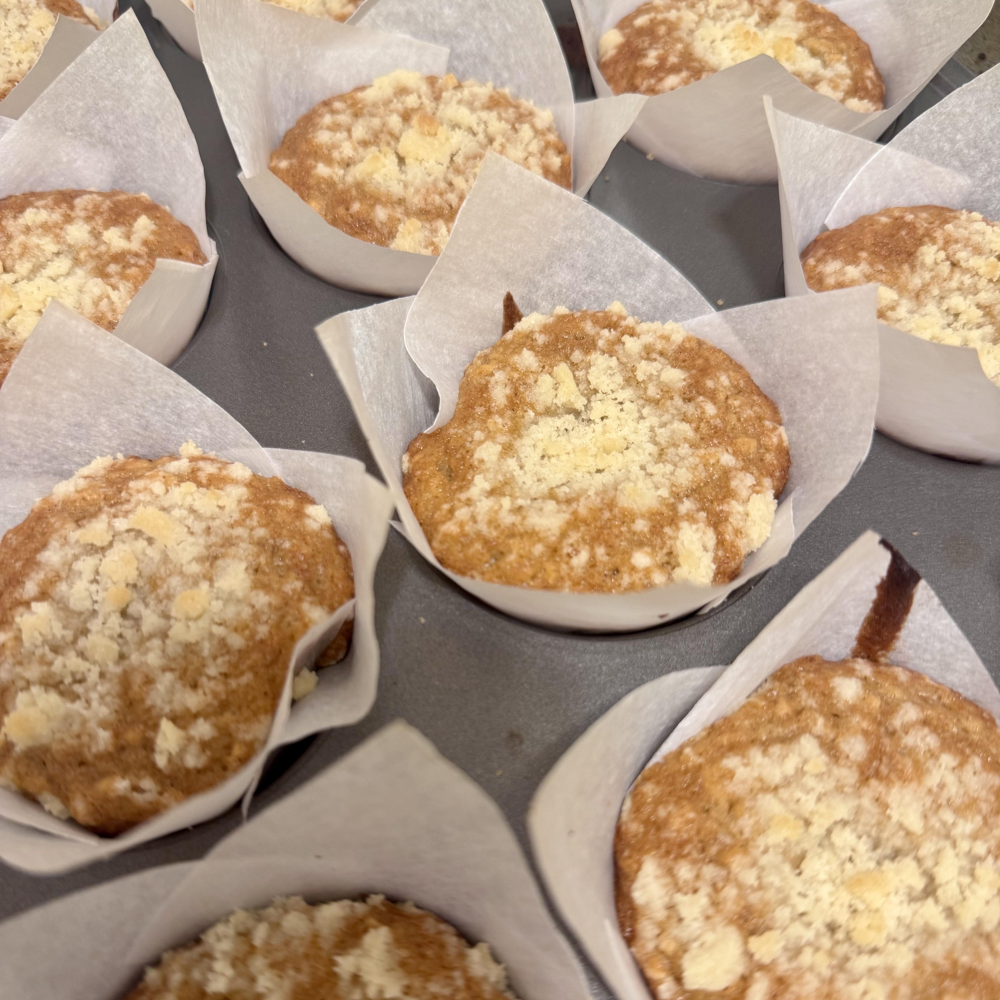

These banana oat muffins are absolutely delicious and lean on the healthier side. The original recipe can be found here. This recipe's ingredients list additonal sugar and just 1 banana, while the original does not include the additional sugar and calls for 3 bananas. I chose this version of the recipe as it is what I enjoy best and this version doesn't have too much overpowering banana flavor. Choosing overripe bananas is important to obtaining a soft and tender muffin.
Optional add-ins for this recipe include chocolate chips, and walnuts. I highly recommend adding chocolate chips if you have any as they pair very well with the banana and oats. In the original recipe it uses rolled oats, I prefer and would recommend using quick oats instead. Quick oats tends to result in a softer more tender bake; while rolled oats tend to not absorb as much liquid as quickly so they sometimes cause a tougher and or more dense texture. You'll notice that the measurements in the recipe listed here and the original one are a bit different, this is because the original recipe will make 24 standard muffins. This recipe takes about 45 minutes to make in total and makes 12 standard muffins. An optional add-in you might consider would be a crumb topping for your muffins, this is relatively easy to make and will make your muffins more bakery-style.
Congrats! Your banana oat muffins are finished and ready to be enjoyed.
Home